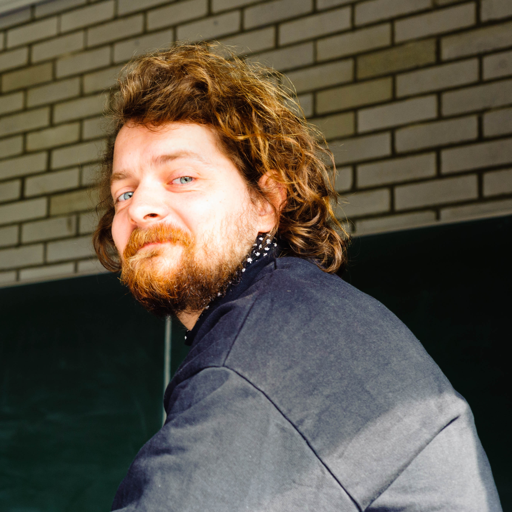

About
I am a postdoctoral researcher at the German linguistics lab led by Berry Claus at Leibniz University Hannover. My research focuses on (non-standard) response particles, modal particles and other attitudinal and modal expressions. I am also interested in the potential for disinformation of specific linguistic expressions and constructions. For an overview of current research topics, see my presentations.
Short CV
2015 B.A. German Linguistics & Philosophy, Humboldt University Berlin
2018 M.A. Linguistics, Humboldt University Berlin
2024 Ph.D. Linguistics, University of Konstanz
Contact
felix dot fruehauf at germanistik dot uni minus hannover dot de
Researchgate
